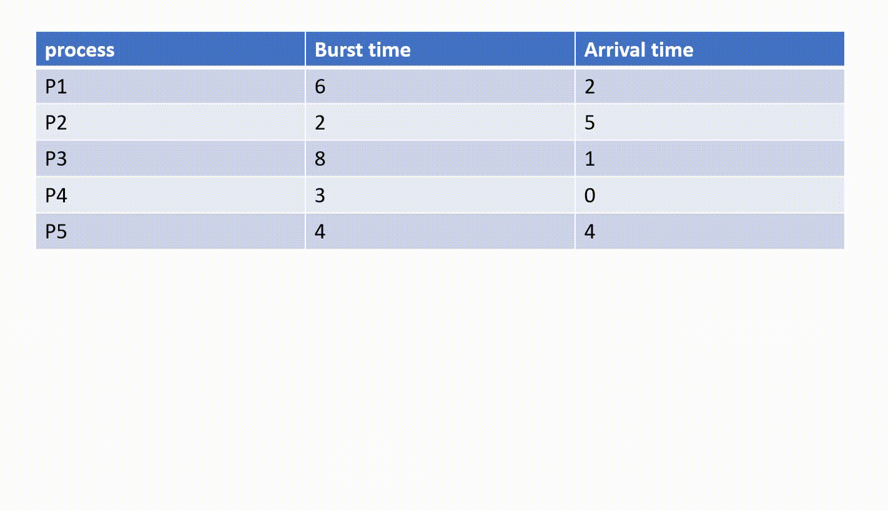

Instructions:
☛ Hover the mouse pointer on Algorithm name to learn about it.
☛ Click on Algorithm in the navigation menu to solve related question.
First Come First Serve Scheduling Algorithm:
- fcfs allocates the cpu memory to the process which request for cpu first
- non-preemptive
- follows fifo(first in first out) queue
- when one process is using cpu then next processes which have already arrived are added to queue
- Below is an example of FCFS working:

Preemptive Priority Scheduling Algorithm:
- PPS allocates the cpu memory to the process having high priority
- follows fcfs principle if processes have same priority
- Below is an example of PPS working:

Non-preemptive Priority Scheduling Algorithm:
- processes are scheduled according to their priority
- after process is scheduled, it runs till its completion
- Below is an expample of NPPS working: